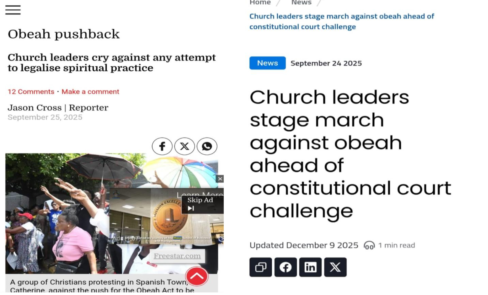
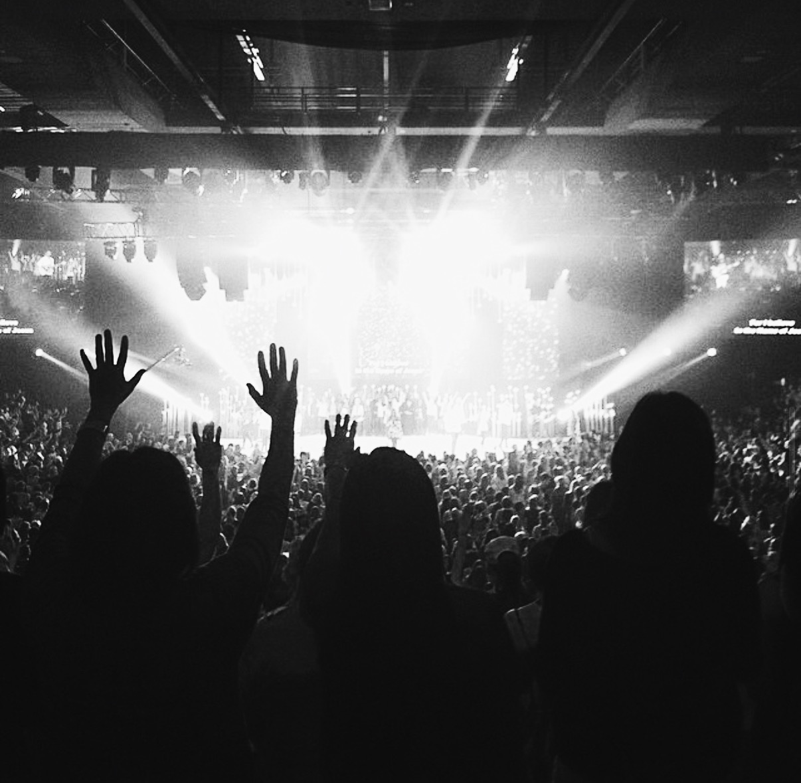
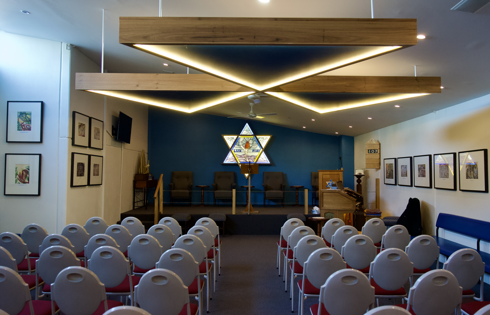
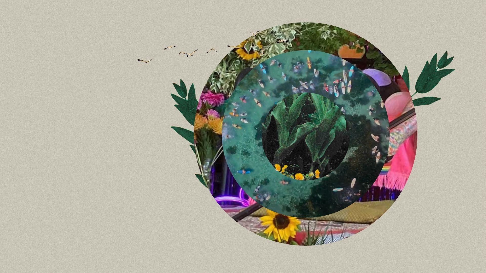
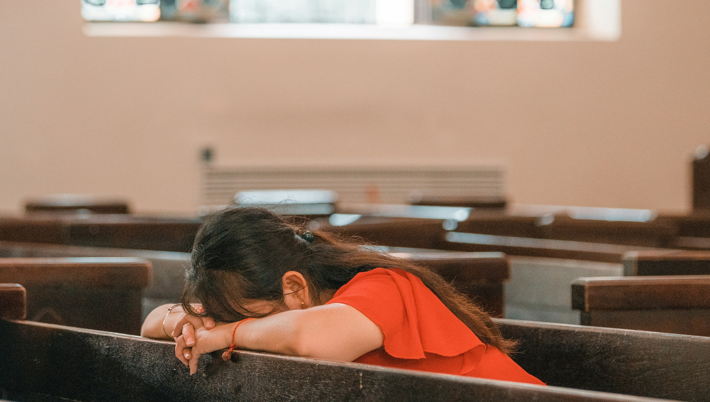
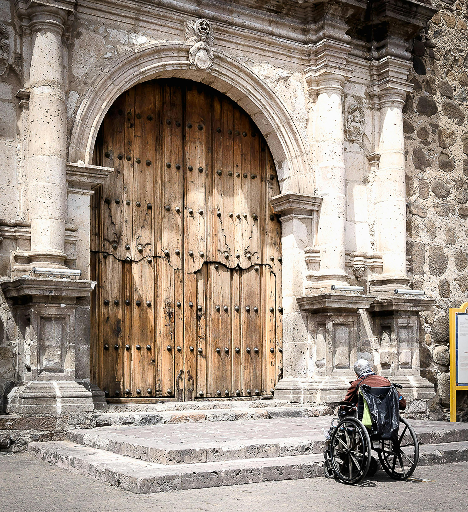
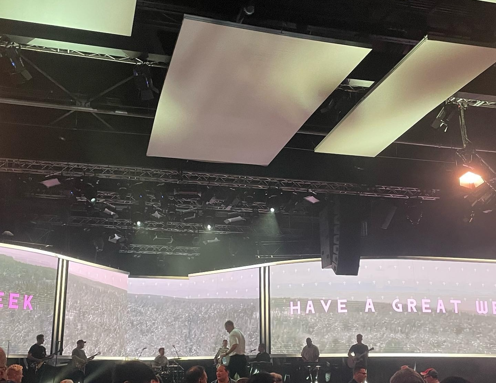

Symposium · Western Sydney University & University of Queensland
Purpose & Background
Religious and spiritual practices have been historically understood as providing moral comfort. In fact, for Durkheim, comfort is the express purpose of social participation in religious rites. Sara Ahmed (2014, p.148) describes comfort as a sense of ‘fit’ between the body and its surroundings, that is, “To be comfortable is to be so at ease with one’s environment that it is hard to distinguish where one’s body ends and the world begins”. Conversely, discomfort may come from feeling dis-ease with one’s environment. Certainly, as much as some religious / spiritual communities go to great lengths to create comfortable environments that support belonging, vulnerability and divine connections, the character of many other religious / spiritual rites and practices (such as pilgrimages, fasting and exorcisms) centre around increasing discomfort or even promoting (physical) suffering in the service of piety and/ or spiritual enlightenment.
Moreover, just as religious / spiritual spaces are racialised and classed, so too are experiences of (dis)comfort withing these spaces. Socially marginalised people, such as those who are negatively racialised (Weng et al 2021, Chui et al 2020) or those who identify as LGBTQ+ (Jennings 2023; Dalton 2023; Baird et al 2024) can experience discomfort, even harm, in spaces of faith where other’s comfort is prioritised, catered to, or sanctified. Indeed, within religious and spiritual places multifaceted experiences of (dis)comfort are calibrated, embraced, resisted, negotiated, and reimagined.
In this online symposium, we welcome nuanced examinations of (dis)comfort in contemporary religious and spiritual communities.
We are interested in contributions that critically consider:
Contributors
Eco-horror, Māori culture, and secular discomfort in Belief: The Possession of Janet Moses
This paper critically investigates the eco-horror framing of mākutu in the New Zealand documentary-drama film Belief: The Possession of Janet Moses (2015). The film focuses on the death of Janet Moses and injury to a family member resulting from a series of healing ceremonies performed by their family. Unlike the film, my interest in this paper lies not in interrogating the ‘truth’ of mākutu. Rather I interrogate how the eco-horror framing of the latter in the film works to present Māori spirituality as an existential threat that entraps families and places. The film frames and presents mākutu through gothic tropes of exorcism and suburban horror. This occurs through a delayed narrative where contextual information regarding the injuries and death incurred by the family are revealed through narrative twists to heighten the tension of the docu-drama. In particular, where Māori truths are framed through point-of-view shots and close-ups, non-Indigenous truths are contextualised by establishing shots of libraries, police stations, and legal courts. While the film is advertised as a revelation of ‘how both love and fear could drive a New Zealand family to unwittingly kill one of their own’, the effect of the gothic tropes is to render Māori spirituality, family relationships, and populated areas as Other. The film then reiterates settler colonial tropes of Māori medicine and spirituality as a dangerous presence in civilised society. My analysis demonstrates how eco-horror can be used to deploy racialising and colonising knowledges to generate settler secular discomforts with First Nations spirituality.

Battling Obeah: Modernity, Evangelicalism, and the Re-inscription of Creole–African Plantation Dichotomies in Contemporary Jamaica
In 2019, Jamaica’s Minister of Justice proposed repealing the country’s 1898 Obeah Act (amended 2013). Succeeding legislation dating back to 1760, the law broadly prohibits spiritual practices commonly framed as occult, malignant, and/or fraudulent. The proposal met with strong public pushback, especially from Evangelical church leaders, many either unaware of or uninterested in the law’s antecedents in the suppression of African resistance to slavery. This paper argues that opposition to the repeal reflects not merely religious apprehension or legal disinterest but a persistent yet ideologically constructed tension between modernity and Africanness. Central to this tension is a continuum of “comfort”/“dis-ease” with obeah that extends beyond formal religious settings. Operating along this continuum, normative Jamaican sociocultural spaces overtly condemn obeah as backward and evil and, therefore, a risk to community health and progress. At the same time, its clandestine use for protection, healing, divination, advancement, and sometimes retaliation is tolerated. The paper contends that Evangelicalism, now functioning as a site of legitimacy and aspirational religious identity in Jamaica, exacerbates this tension by becoming a key mechanism through which members of the country’s aspirational classes access what is perceived as modernity, particularly through prosperity-oriented teachings and alignment with transnational religious and economic networks. Drawing on creole theory and critical discourse analysis, it examines how, through public debate, media commentary, and the responses of Evangelical church leaders, neo-colonial religious formations and their socio-economic adjuncts encode hierarchies of modernity and backwardness and reinscribe Creole–African dichotomies rooted in the plantation social order.
Understanding Purity Culture in Contemporary Western Australia
My honours research examined the presence and performance of Purity Culture in contemporary Western Australia, with a specific focus on the body as a site of religious ritual, social surveillance and the embodied discomfort that comes from transgressing taboo. Usually associated with American Evangelical Christianity, and promoting public commitment to sexual abstinence before marriage through pledges and rings, Purity Culture has been found to reinforce gender stereotypes, and collapse the public and private spheres. Drawing on qualitative interviews with ten young adults raised within WA Christian environments, this study explored how participants understood and experienced purity-based teachings around sexuality, gender, desire and relationships. Using Critical Discourse Analysis, I argue that contemporary Purity Culture operates through mechanisms of discomfort that position bodies and sexuality as morally dangerous, intertwining discourses of danger, taboo, and moral order into shame-based sexual teachings. Participants described experiences of shame, confusion, self-monitoring, and discomfort in relation to their bodies, relationships, and sexual identities. This discomfort and fear were exacerbated by purity teachings framing sexual identities, particularly those of women and girls, as threats to the strict moral and spiritual order that would permanently taint and contaminate the individual and those around them. Identified themes were consistent with existing American literature, including the public performance of virginity, strict gendered expectations around sexuality, reliance on fear-based messaging, limited discussions of consent and pleasure, and the abject fear and discomfort of transgressing purity boundaries. This qualitative honours project contributes to existing scholarship by examining the mechanisms of fear and discomfort within Purity Culture and demonstrating how purity discourses continue to shape understandings of sexuality, morality, gender, and religious discomfort around intimacy and bodily autonomy in contemporary Australian contexts.

Comfort as Strategy: How Institutionally Managed (Dis)comfort Produces Church Hurt in Australian Megachurches
Within Australian megachurches, the comfort of belonging can become discomfort – and even harm – when that comfort is institutionally produced, managed, and strategically deployed. This presentation reports findings from doctoral research that employs constructivist grounded theory to examine 26 women’s experiences of ‘church hurt’ in Australian megachurches. Located in the sociology of religion and informed by critical feminist and lived religion frameworks, it examines how institutionally managed (dis)comfort functions as a vehicle for subtle and systemic harm in these settings. Extending Ahmed’s (2014) account of comfort as bodily fit within one’s environment, I argue that harm in Australian megachurches operates through institutionally produced and managed experiences of (dis)comfort, normalising conditions of harm before they become legible as such. Three mechanisms are identified through which this occurs: institutional image management, which regulates what can be named and by whom; conditional belonging as social control, which leverages belonging to enforce conformity with institutional expectations; and systemic exploitation, which spiritualises the extraction of women’s labour and loyalty. These mechanisms are mutually enforcing, creating conditions that generate harm whilst rendering it difficult to name. When women cease to operate within these mechanisms, institutionally managed comfort collapses, and harm becomes recognisable – though that recognition is often retrospective. This presentation contributes a sociological account of institutionally managed (dis)comfort in religious communities, foregrounding whose discomfort is rendered invisible and at whose expense institutional comfort is maintained.
Our Religion is a Horror Show! Reflections from a Decade Studying the Dark Side of Catholicism
More than any other American writer, Flannery O’Connor has often been considered the exemplar of what sociologist and theologian Andrew Greeley called the “Catholic Imagination” ‒ a strongly incarnational religious sensibility flowing from a sacramental orientation to the world, focused on the tangible and material, which seeks to glimpse of the divine in the everyday. Despite this, O’Connor’s oeuvre was concerned almost entirely with the dark side of religion, a very real sense that evil is ever-present, and the artistic obligation for graphic realism in how it is portrayed. In her work, O’Connor expounded a theory of what might be called, drawing from the work of religious studies theorist Robert Orsi, “uncomfortable religion,” a Christian realism that decried sentimentality and saccharine piety. In his book Between Heaven and Earth (2005), Orsi highlighted “the importance of studying and thinking about despised religious idioms,” that is, “practices that make us uncomfortable, unhappy, frightened—and not just to study them but to bring ourselves into close proximity to them, and not to resolve the discomfort they occasion by imposing a normative grid.” This paper brings O’Connor into conversation with Orsi to reflect on a decade of studying the dark side of Roman Catholicism, looking at themes ranging from demonology to clerical abuse.
From Arjuna’s Despair to Inner Equanimity: The Bhagavad Gita as a Framework for Understanding Spiritual Discomfort
While discomfort in religion is often examined through exclusion, power, or embodied practices, this paper shifts attention to discomfort as an internal experience that spiritual traditions themselves seek to diagnose and transform. Here I explore spiritual discomfort not merely as something produced in religious communities or places, but as an inner condition of human crisis. Drawing on ethnographic research (in community workshops and therapeutic settings) and interviews conducted with practitioners of Gita-informed yoga therapy and Hindu diaspora communities in urban India and Australia, this paper situates the Gita’s teachings within lived communities where these frameworks are actively used to navigate personal distress. Drawing on the Bhagavad Gita, I examine how the Gita offers a framework for moving from inner disorientation toward emotional regulation, ethical clarity, and resilience. These concepts are not treated as abstract ideals; rather, they are interpreted and applied by community members in Australia’s Hindu diaspora, including yoga therapy practitioners and second-generation migrants navigating questions of belonging and identity. Rather than treating the Bhagavad Gita solely as scripture or theology, this presentation approaches it as a psychological and philosophical resource for understanding suffering and response. This paper contributes a non-Western perspective to discussions of (dis)comfort and meaningfully considers how ancient concepts may speak to contemporary experiences of anxiety, trauma, and identity conflict.

Navigating (Dis)comfort in Mediumship within Australian Spiritualism
This paper explores how experiences of comfort and discomfort are intertwined in the practice of mediumship within Australian Spiritualist groups. During mediumistic readings, mediums—who act as intermediaries between the living and the dead—navigate emotional contradictions that shape both their experiences and those of recipients. For recipients, grief may be temporarily eased through a sense of reunion with the deceased, made possible by the medium. These encounters can bring comfort, consolation, and sometimes healing. However, they also reawaken an underlying discomfort by reminding recipients that their loved ones will not return physically and that their absence endures. As a result, recipients often experience contradictory yet complementary emotions—such as melancholy and pleasure, reassurance and unease—producing a distinctive emotional state that may leave them wanting more. Mediums also experience this emotional ambivalence, as readings are marked by uncertainty: connections with the afterlife may fail, recipients may not be identified, or evidence may be deemed insufficient. The comfort of successful reading is thus overshadowed by the possibility of failure, which is inherent in strengthening connection with the afterlife. Moreover, when contact occurs, mediums may perceive unsettling emotions, thoughts, and messages from the deceased, which they must nonetheless convey in ways that provide comfort. In this sense, mediums act as emotional mediators, navigating their own feelings, those attributed to the deceased, and those of the recipients. This paper therefore argues that mediumship emerges as a complex interplay between comfort and discomfort, in which spiritual encounters simultaneously soothe and unsettle social actors.

Living Wakes: (dis)comfort in an emerging ritual
By the late twentieth century funerals, and memorials, came to be celebrations of the deceased’s life in personalised “celebration of life or life-centred funerals” (Garces-Foley 2022). This has been fertile ground for ritual creativity, leading to sometimes unexpected or new rites that encourage guest participation. An emerging example, and the case study of this paper, is that of living wakes, where a dying person invites guests to attend a gathering before they die, in order to say goodbye and celebrate their life. Through ethnographic fieldwork and interviews with those who have hosted living wakes, as well as deathcare workers, this paper explores how the ritual creation takes (dis)comfort and unfamiliarity into account and often includes deliberate participatory elements to ease this. These elements, however, at times create their own moments of (dis)comfort. Through this we can ask how DIY end-of-life rituals, such as living wakes, are both designed and improvised in ways that respond to participants.

When Piety Hurts: A Feminist Theological Analysis of Women’s Discomfort in Indonesian Churches
This paper examines the dynamics of comfort and discomfort in Christian worship spaces in Indonesia through a feminist theological lens. While churches are commonly imagined as spaces of spiritual comfort, belonging, and moral formation, this study argues that such comfort is unevenly distributed and often structured through patriarchal norms that regulate women’s bodies. Drawing on Sara Ahmed’s notion of comfort as the “fit” between bodies and spaces, this paper explores how Indonesian church contexts construct ideals of femininity through expectations of modest dress, bodily discipline, and moral propriety. Women are frequently positioned as responsible for maintaining communal purity, leading to the normalization of bodily surveillance and self-regulation. In this process, discomfort—such as feelings of inadequacy, restriction, or self-consciousness—is not only tolerated but often reinterpreted as a form of piety. Through feminist theological analysis, this paper argues that the comfort experienced within these worship spaces is contingent upon the disciplining of women’s bodies. What appears as spiritual harmony is sustained by gendered asymmetries that render certain bodies “out of place” unless they conform. By foregrounding women’s embodied experiences, this study challenges dominant assumptions about religious comfort and calls for a reimagining of church spaces as sites of genuine inclusivity and justice. This paper contributes to broader discussions on embodiment, affect, and power in religious practices, particularly within non-Western contexts.
Spiritualized Suffering: GBV Survivors and Discomfort in Religious Spaces
This paper examines how survivors of gender-based violence experience discomfort within religious communities when their suffering is interpreted through theological and moral frameworks that emphasize endurance, forgiveness, sacrifice, silence, or spiritual testing. While religious spaces are often imagined as sites of comfort, healing, belonging, and moral care, they can also become emotionally and spiritually unsafe for survivors whose pain is reframed as a private burden, a family matter, or a test of faith. Drawing on feminist theological analysis and survivor-centred perspectives, the paper explores how religious interpretations of suffering may unintentionally legitimize silence, delay justice-seeking, and place the responsibility for peace, forgiveness, or reconciliation on survivors rather than perpetrators or institutions. The paper argues that discomfort is not only emotional but also embodied, social, and spiritual. Survivors may feel physically present in religious spaces yet morally displaced, especially when sermons, pastoral counselling, or communal expectations prioritize family unity, institutional reputation, or religious obedience over accountability and healing. At the same time, the paper recognizes that faith can also be a source of resilience, dignity, and recovery when interpreted through justice-oriented, trauma-informed, and survivor-centred lenses. By examining the uneasy relationship between comfort, suffering, and religious authority, the paper contributes to broader debates on how faith communities can move from spiritualizing harm to creating spaces of safety, justice, and repair.

Whose comfort? Disability and the management of discomfort in Christian churches
This joint presentation examines how, why and for whom comfort is calibrated in Christian churches, attending to the bodies and spiritual experiences of people with disability. We argue that what is framed as offering comfort in church life frequently does the opposite: it produces discomfort for disabled people while assuaging the discomfort of non-disabled people confronted by disability. We contend that ableism, informed by certain theological interpretations and reinforced through inaccessible worship spaces, shapes whose comfort is treated as the default and whose voices determine what disability inclusion looks like in church communities. We will use two case studies to develop this argument. The first interrogates the persistent charity model of disability, in which disabled people are too often relegated to being recipients of the ministry and care of others. The consequence is that the prospect of disabled people teaching, preaching or leading remains largely off the radar for most church attendees. The second case study examines prevailing theologies of healing. While prayers for healing and eschatological assurances ("don’t worry, you'll be healed in heaven") appear to offer solace to disabled people and are meant well, they often arise from the discomfort of non-disabled church attendees unsure of how to respond to the experience of disabled people today. Drawing on Paul’s image of the Body of Christ in 1 Corinthians 12, we contend not for accommodation but for mutuality: a re-calibration in which the comfort of disabled and non-disabled people is shared as an outworking of Christian faith.

Flows and rips: calibrating (dis)comfort in contemporary-style churches
‘Contemporary-style’ churches go to great lengths to make their buildings, people, services, and events feel welcoming and comfortable to newcomers and regular members alike. During my ethnographic research in 20 Pentecostal churches in South East Queensland, I spoke with pastors, creative team members, and technicians who are in charge of creating what they call ‘distraction-free environments for worship’. By removing distractions and putting care and love into both the church service structure and the surrounding atmosphere, they hope to make congregants’ bodies more receptive to the message of the gospel. A comfortable body is more attuned to the presence of God, is the idea. In this paper, I argue that this carefully crafted baseline comfort, conversely, also makes uncomfortable moments much more potent. Zooming in on a particularly uncomfortable ‘altar call’-moment I experienced, I show that church staff actively calibrate comfort and discomfort. During the altar call, a combination of silence, bright lights, and a redirection of focus from stage to audience worked together to ‘rip’ the otherwise comfortable ‘flow’ of the service. Technicians and pastor in this moment work together as ‘ritual specialists’, effectively using the tools at their disposal for affective engagement. Where comfort is commonly understood as a static ‘emotional state ’, I show that comfort is dynamic and results from aesthetic and affective factors, including technological interventions. I argue that comfort and discomfort are not opposing ‘states’, but mutually constitutive dynamics of religious practice, which derive their power from expertly cultivated atmospheres.
Thinking about and through (dis)comfort
It has taken many years of confronting and emotionally laboursome reflections on doing fieldwork in a controversial, high demand global Pentecostal megachurch to allow myself to think aloud about and through (dis)comfort in religious places and practices. I come to this through an ongoing grappling with the methodological and ethical dimensions of navigating power, vulnerability and harms in spiritual and faith communities.
Programme
| Time | Session / Event | Presenters | Comments |
|---|---|---|---|
| 09:15 | Technical preparation | For presenters in the first block | |
| 09:30 | Opening & Introduction statement | Kathleen Openshaw & Jerrold Cuperus | |
| 09:50 | Conversation 1 | Holly Randell-Moon; R. Anthony Lewis & Joseph T. Farquharson | |
| 10:20 | Stretch break | Draft questions on whiteboard | |
| 10:25 | Q & A | conversation 1 | |
| 10:35 | Conversation 2 | Gracie Cayley & Larney Peerenboom | |
| 11:05 | Stretch break | Draft questions on whiteboard | |
| 11:10 | Q & A | conversation 2 | |
| 11:20 | Reflection session | Break out or plenary: artefact | |
| 11:30 | Lunch break | Reconvene at 12:30 | |
| 12:20 | Technical preparation | For presenters in the second block | |
| 12:30 | Conversation 3 | Bernard Doherty; Shweta Goyal; Jerrold Cuperus | |
| 13:15 | Stretch break | Draft questions on whiteboard | |
| 13:20 | Q & A | conversation 3 | |
| 13:35 | Conversation 4 | Charlotte Tribouillois & Cindy Stocken | |
| 14:05 | Q & A | conversation 4 | |
| 14:10 | Coffee break | ||
| 14:30 | Conversation 5 | Yohanes Krismantyo Susanta; Scholar Kaaria; Louise Gosbell, Erin Hutton & Jenny Richards | |
| 15:15 | Stretch break | Draft questions on whiteboard | |
| 15:20 | Q & A | conversation 5 | |
| 15:35 | Stretch break | Prepare final statements & reflection comments | |
| 15:45 | Reflection session | Break-out & plenary: artefact making | |
| 16:15 | Closing statement | Jerrold Cuperus & Kathleen Openshaw | |
Housekeeping
This online conference will take place on Zoom. A link will be shared with participants shortly before the symposium. All sessions will be held via the same Zoom link. Please do not share the Zoom link with anyone, and do not post it anywher online. If there is anyone you would like to invite to the seminar, please ask them to email the convenors. We will ask presenters to consent to their presentations being recorded, discussions and Q&A will not be recorded.
Participating in online seminars can be tiring. While we hope to keep the sessions energetic and interactive, feel free to drop in and out of sessions as needed. Just make sure that you turn off your microphone and camera before re-joining as to not accidentally disturb the proceedings. During presentations, we encourage everyone to turn on their cameras so that the presenter can see their 'audience'. Ensure that the space you are in is professional, or use a Zoom background as to avoid unnecessary distractions. Please keep an eye on your chat during the sessions as well, as moderators/convenors might ask you to turn off your microphone/camera for this purpose. We reserve the right to remove persons who exhibit distracting or unprofessional behaviour from the meeting at any time. During stretch and coffee breaks, which precede Q&A, we encourage participants to use the Zoom whiteboard to draft questions to presenters. During Q&A, presenters may choose a question to engage in and might ask participants to expand on their question verbally.
Presentations: Presentations are paired up into 'conversations' as per the schedule above. Individual presentations should be between 12 and maximum 15 minutes to allow ample time for breaks and Q&A. Please be respectful of your fellow presenters' time in preparing your presentation and know that we might ask you to cut your presentation short if you go over time.
Technical quality: We ask presenters to ensure that their equipment (microphone, camera, etc.) are working and produce quality sound and image. Please drop into the 'technical prep' session before their presentation if you need any assistance or are unsure. Please ensure that there is not too much backlighting in your video, and consider using a ring light to properly illuminate your face when presenting/speaking.
Slides and pre-recorded presentations: Presenters will be allowed to share their screen if they want to use slides (not required). As a backup, please send us your slides the day before the symposium if you are using them, so convenors can share them if needed. If you are unsure about your WiFi connectivity, consider pre-recording your presentation and sharing it with convenors prior to the symposium, or sending us your presentation text so we can read it for you while you sort out any technical issues. For any questions about your presentation, please get in touch with the organisers.
If you have any accessibility needs (keeping in mind the online format), please get in touch with the organisers.
For any queries, please contact [j.cuperus@uq.edu.au].